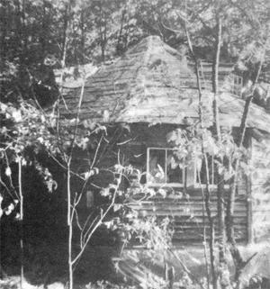

Are you like us: the type that can't work until your back is to the wall? Do you face as John and I did last fall-the prospect of either building a sound shelter by snow time or digging up the bread to rent a place for the winter? Well, take heart. We started the foundation of our ten sided house around Labor Day-in northern New York State! and were snugly settled inside by November. You can do the same, given two prerequisites: a plan and some building materials.
If winter's breathing down your neck and you have to have shelter right now, your plan should be quite simple: "Think small". The Tudor mansion of your dreams can wait until next year. Do, however, allow for future expansion. Our ten-sided design gives us just that many directions for additions. Remember your goal a comfortable, pleasant-looking shelter in as short a time as possible. Keep in mind, too, the golden rule of us procrastinators "What you don't get done now can be done later"-and stick to essentials.
In case the word "plan" intimidates you, please note that I'm not necessarily talking about a blueprint: We started one of those once. John carefully constructed a rectangle on a large sheet of drafting paper, and then asked, "OK, where do you want the door?" End of blueprint.
As it happened, our ten sided "circular" design never found its way onto paper at all. It just sort of came to us after we'd had several encounters with dome freaks but we took from ahem only the idea of many sides, since we wanted straight walls as a setting for our conventionally shaped furniture and didn't care to tackle the complex mathematics of dome building. Our simpler scheme required the use of only a small amount of geometry for working out the angles of the floor and the roof.
We soon learned that the plan of a house is inseparable from its location. Once we had picked the most convenient site right beside our spring and protected from winter winds and summer sun by trees and a cliff the "where shall we put the door" question answered itself: "We can't have it here because of the big cherry tree. The handiest place would be facing the spring and let's place another on the opposite wall, so we'll have two fire exits." The question of window placement was handled similarly: "Go for the light and the prettiest views, and avoid the prevailing winds."
Above all, be different. A conventional rectangular house put up in two months for $250 might have tended to look like a shack, but the quaintness of our house's ten sides and coolie hat roof dares anyone to be so disparaging.
Your house plan will have to be adjusted according to the materials you collect and that, in turn, will be determined by your financial resources and ingenuity.
First, look around for whatever building supplies you may have on hand. Our own place yielded ten trees for rafters and a couple of good-sized elms which now stand upright-one above the other-in the middle of the house to help support the roof, (much like the center pole of a tent). Rocks for the foundation also came from the land around us.
Next, scrounge. Let friends and neighbors know your needs so they'll be able to steer you toward anything interesting they turn up. We got our windows from an acquaintance this way and found our back door in the dump.
Lumber is sometimes harder to come by. While abandoned buildings abound in most country areas, finding the owner of such a structure and getting permission to tear it down was one of our major stumbling blocks. We finally managed to buy a run down farmhouse for $25.00 and then spent a month demolishing the building and hauling the wood home. Our load, of course, included a lot of old nails, many of which we removed from the boards and straightened It's a tiresome job but does help to cut cost.
In the end, when you've scrounged all you, can, you'll,. Kakis have to buy a few items. For us, this included roll insulation, tar paper, some nails, a few panes of window glass, caulking compound, a roll of clear plastic, and aluminum offset printing plates from the local newspaper office (for roofing). The used plates cost 10d apiece when purchased in large quantities which isn't quite the bargain you might think, since the sheets have to be fastened down with expensive aluminum nails.
Our total bill for materials at the end of the first season was $250. We still have additions and improvements to make (including the finishing of the interior walls) but that small sum provided us with the comfortable, livable structure we needed to make it through our first winter on the farm.
To begin the fabrication of our home, we cleared a circular area the size we wanted the house to be (25 feet in diameter). Then John dug a hole in the center of the space he made it three feet deep, so that the excavation would reach below the frost line and piled our flat foundation rocks into it. From this center "pillar" we then measured outward to ten equidistant points on the circumference of our circle. Another hole was dug at each of these spots, and foundation stones were set in so that the tops of the pillars were level with one another.
Our floor joists consist of 2 X 4's nailed together to form 4 X 4's (although 2 X 6 lumber would have been better). A bird's eye view of the floor support plan looks like a huge wagon wheel with ten spokes the joists radiating from the center and resting on the stone pillars. At the hub of the wheel we left a circular opening for the center pole (the "axle") to rest in. The spokes at the outer circumference were connected with 4 X 4's, and supporting joists were run between to provide a strong framework for the floor. Since we'd left little crawl space between the wheel and the earth, we-then slipped whole structure.
From that point on, most of the construction was fairly conventional and followed the methods described in the various good books on building frame structures. The guide we used was an out of print work entitled Your Dream Horns: Hove to Build It for Less Than $3,500 by Hubbard Cobb, Wm.. H. Wise and Co., Inc., New York, 1950. (Handbooks that are currently available include How to Build a Wood-Frame House by L.O. Anderson, Dover Publications, Inc., New York, 1973, $3.00, and Basic Construction Techniques for Houses and Small Buildings Simply Explained prepared by the Bureau of Naval Personnel, Dover, 1972, $4.50. Both can be ordered from the publisher or from MOTHER'S Bookshelf. -MOTHER.)
While I started to lay the floor by cutting the tongue and groove boards from our abandoned house to fit the tee: triangles formed by the joists, John worked on the new building's frame. His first step was to make a sole plate on top of the outermost floorboards by nailing 2 X 4's around the circumference of the house. He next placed 20 seven and a 4 X 4 uprights one at each of the 10 "corners" and one halfway between each pati rinds were connected by a plate made of 2 X 4's.
Since the top plate has the important job of holding up to the rafters, John strengthened it in the following manner: Across each of the 10 angles he attached a board one inch thick to form a triangle. Then 1 X 4's were nailed over the original plate and another layer of 2 X 4's hammered down on top of that. The result was a framework securely tied together at the top with sturdy 4 X 5 crosspieces to take the weight of the rot Window and door framing followed and, with boards added to close in the walls, the house began to resemble a small roller rink or ballroom.
The elm trunk we used for a center pole is approximately 7-1/2' tall and 1-1/2' in diameter, and its installation required the help of a few friends. Four men carried the tree inside with lagging tongs and set it upright in the center of the house, where the floor joists help hold its base in position.
John nailed a circle of scrap plywood to the top of the trunk and made another horizontal wagon-wheel frameworkthis time from 2 X 4's for the upstairs floor. One end of each upper floor/ceiling joist was set on the central disc, and the other placed beside one of the 20 vertical wall supports. On top of the hub formed by the joists we laid another circular piece of plywood and on top of that was set another, taller elm trunk to extend the center pole high enough for a peaked roof which would allow upstairs headroom. Again, the help of a few friends was mandatory.
Since the upstairs flooring wasn't laid until later, after the rest of the house had been finished, we had to stand on old doors put across the framework while we worked on the rafters. The placing of those straight tree trunks, each 18' long and 6" to 10" in diameter, was the most difficult part of the project.
The first step was to notch the spots that would rest on the wall framework. We measured from the top of the center pole to each of the house's corners, and made the necessary cuts with a chain saw (leaving enough of the log's end so that the roof would overhang the wall by about a foot). Then came the sheer muscle and sweat of hoisting each rafter into place and trailing it with 8" spikes (pegs are a possible alternative). The two of us managed to set all the trunks but one which called, again, for the help of a friend.
After the rafters were up, John built dormer window frames in three separate roof triangles to give light and more headroom upstairs. The resulting roof skeleton was a coneshaped cap with three small visors.
Boards were then nailed to the rafters, tar paper laid, and we began the task of attaching the aluminum roofing (which meant folding the offset plates in two and fastening them shingle wise). A roofer lent us stirrups from which we hung a 2 X 4 scaffold that helped us as we climbed about on the slanted surface.
Inside finishing consisted of laying the second floor, building a ladder to it, putting in windows, hanging doors, and installing insulation. On the outside, we nailed up tar paper and used clapboard from our $25.00 abandoned farm house to cover as many walls as we could. By that time winter was staring us in the face, and the wood heating and cooking stoves were welcome additions.
The result of our labors so far is a circular type building with a center-peaked roof from which protrude three vertical windows. The inside is a spacious "round" room 25 feet in diameter, with an elm trunk bark and all in the center. The eye doesn't rest long on any one point, as in a square interior, but sweeps around the lines of the walls. There's a feeling of warmth and space. Upstairs is another room, quaintly lit, by its three many paned dormers.
If you're pressed for both time and money, yet want an attractive, durable shelter, you might find that a design something like ours will work well for you. A many sided house lends itself easily to the use of recycled materials because short pieces of lumber can be used for almost everything except the joists and rafters.
Such a building goes up quickly, can be constructed (for the most part) by two people, costs little, and will give years of comfort and rent-free living. That's a big return for two months' work!.
|
The Tiejens' home nestles in a sheltered site near a spring. |
 The house is based on a ""wagon wheel"" framework, with specially braced top plates. |
|